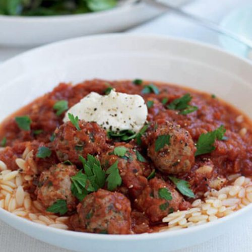

BEEFS

Meatballs with orzo pasta
Meatballs are a family favourite and this high iron and protein version with orzo pasta is no exception.
Serves: 4
Time to make: 40 mins
Hands-on time: 15 mins
Nutrition Info (per serve)
Calories : 431cal
Kilojoules : 1803kJ
Protein : 36.4g
Total fat : 9.3g
Saturated fat : 4g
Carbohydrates : 54.3g
Sugars : 16.2g
Dietary fibre : 6.9g
Sodium : 158mg
Calcium : 122mg
Iron : 5.1mg
Ingredients
500g lean beef mince
½ teaspoon chilli flakes
zest of 1 lemon
4 tablespoons chopped fresh flatleaf parsley or coriander
2 teaspoons dried oregano spray ol
1 large onion, finely chopped
3 garlic cloves, crushed
2 tablespoons tomato purée
2 x 400g cans chopped tomatoes
1 cup orzo
150g mixed salad leaves
2 tablespoons balsamic vinegar
Instructions
1. Put the mince, chilli flakes, lemon zest and half the fresh and dried herbs in a medium bowl and season with black pepper. Wet your hands, then combine the ingredients. Shape rounded teaspoons of the mixture into 28–32 small balls (if making ahead, freeze the meatballs in a freezer proof container at this stage, then thaw thoroughly before continuing).
2. Spray a large, deep, non-stick frying pan with oil and set over a medium-high heat. Add the meatballs (in batches, if necessary) and cook for 5–6 min, turning, until browned. Transfer to a plate. Re-spray the pan with oil, then cook the onion and garlic for 5 min or until soft. Add the remaining dried oregano with the tomato purée and cook, stirring, for 1 min. Add the chopped tomatoes and bring to the boil.
3. Return all the meatballs to the frying pan and reduce the heat to low. Simmer for 10–15 min until the meatballs are cooked through and the sauce is thickened.
4. Meanwhile, cook the orzo in unsalted water according to the pack instructions, then drain and divide among 4 bowls. Spoon over the meatballs and sauce, top with a dollop of ricotta, then scatter over the remaining parsley or coriander and some ground black pepper. Toss the salad leaves with the vinegar, then serve alongside.